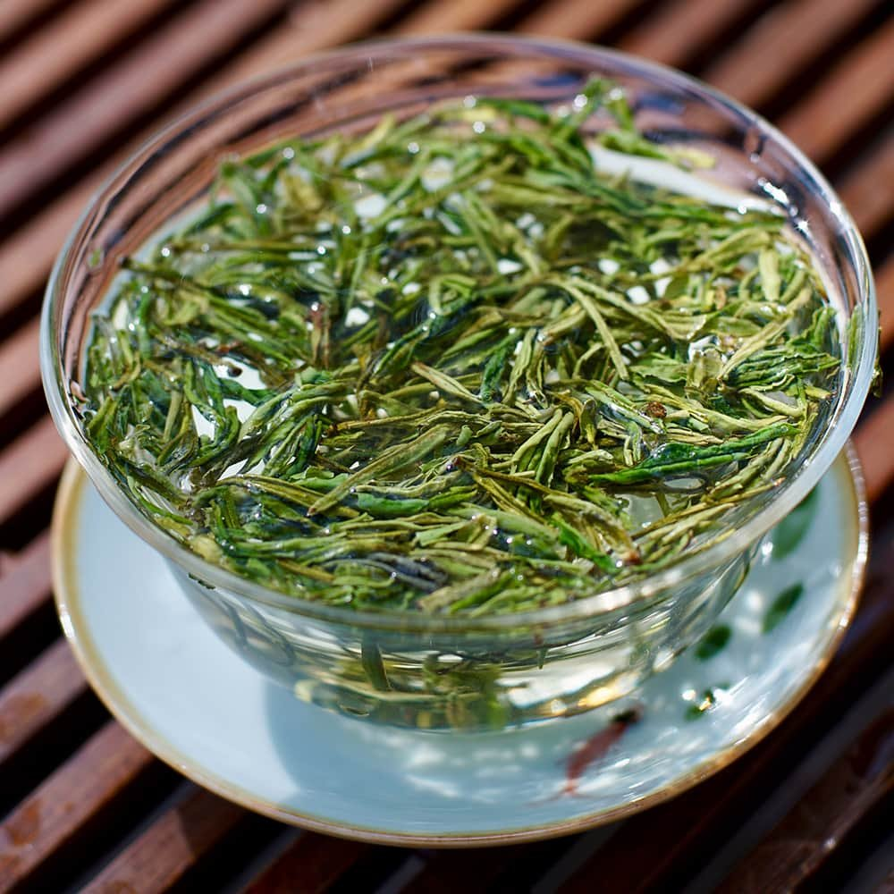
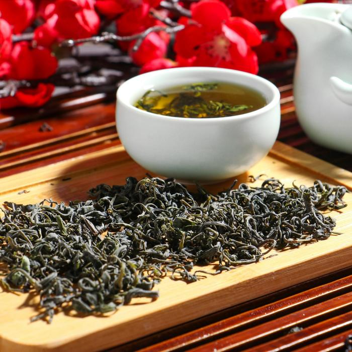
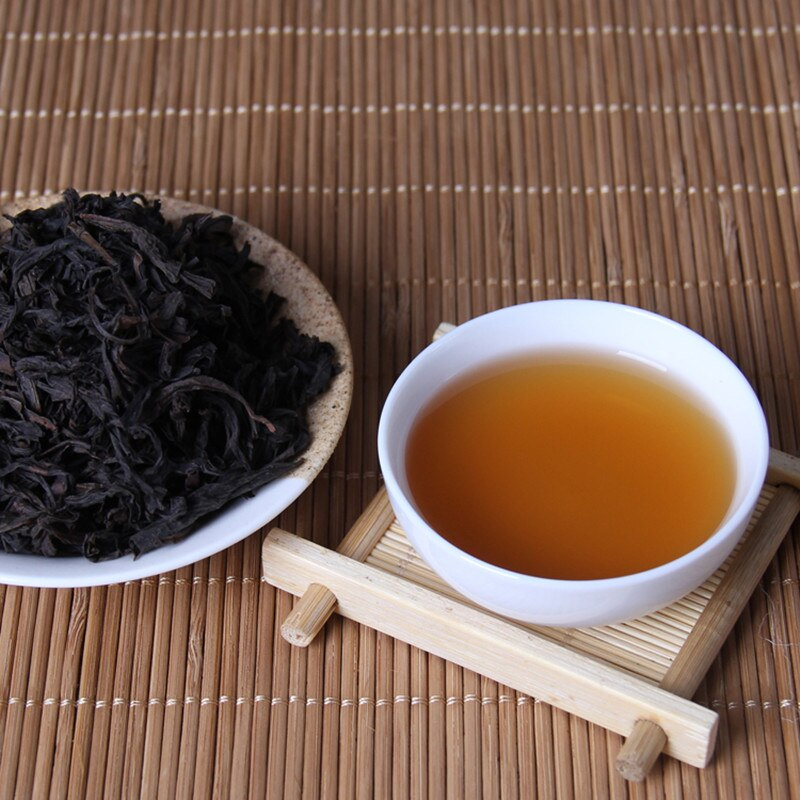
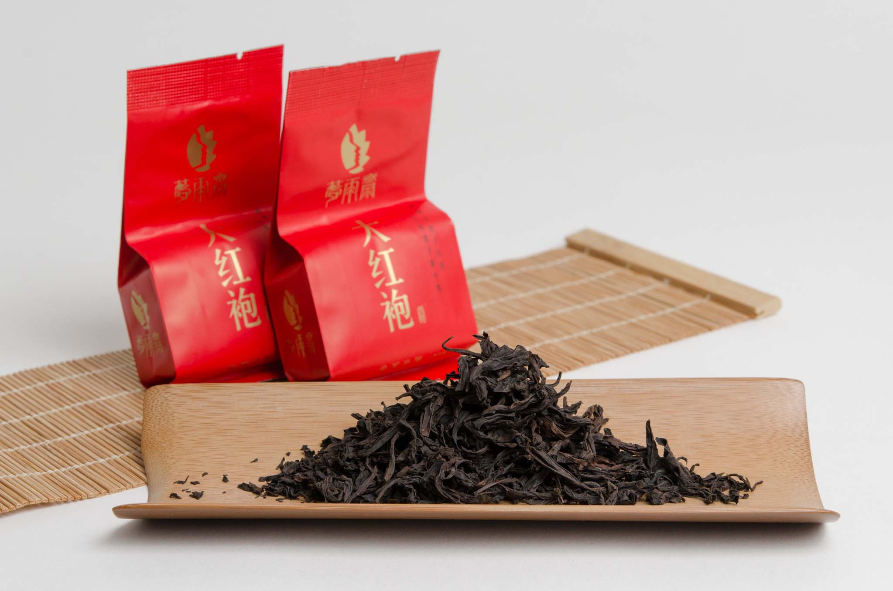

Знаменитый чай «Хуаншань Маофэн» произрастает на горе Хуаншань, которая находится к югу от уезда Тайпин и к северу от уезда Усянь провинции Аньхой. Этот уголок природы является одним из живописнейших районов Китая. Круглый год можно наблюдать, как облака и туманы распространяются по всему горному району. Здесь мягкий климат, обильные осадки, плодородная почва, влажный воздух и краткость солнечного голубого неба. При таких благоприятных условиях чайные почки набухшие и тяжёлые, мягкие и нежные. Чай многократно заваривается, при этом он сохраняет свою свежесть, тонкий аромат, что позволило «Хуаншань Маофэн» стать чаем высшего сорта.
История этого особенного чая невозможна без упоминания его изобретателя – чайного торговца Хи Женган, который унаследовал компанию Ксиютай от своих предшественников. Известный магнат того времени, Хи Женган сам по себе был чайным специалистом. Около 1875 года он выбрал лучшие чайные почки/ростки в деревне Фуксии и стал производить Хуаншань Маофэн. Успех был мгновенным. Он стал богатейшим человеком на Жёлтой Горе и открыл девять собственных чайных магазинов по всему Китаю. Чайная компания в дальнейшем была разрушена вследствие торгового эмбарго и пристрастия его сына к опиуму. Позже, в современные времена, компания возродилась как отдельная организация. В то время как успех Хи Женган принёс славу этому чаю, историки считают, что культивация чая на Жёлтой Горе имела место ещё до Хи Женгана и может уходить корнями ко временам правления династии Мин. В те времена, этот чай был известен как Чай Влажного Тумана Желтой Горы (Хуаншань Юншу). Высокое место, присваиваемое чаю Хуаншань Маофенг знатоками, объясняет, почему в наши дни этот чай считается одним из трёх самых лучших китайских зелёных чаёв.
Для заваривания Хуаншань Маофэна лучше всего использовать воду 85-90 ℃ и способ заваривания «Чжунтоу» (кит. 中投).
Хуаншань Маофэн отличается от других зелёных чаев тем, что при заварке чайные листочки сразу всплывают на поверхность, постепенно начинают вбирать в себя влагу и раскрываются, напоминая птичий клюв с язычком, постепенно погружаясь на дно чашки. Процесс заварки в стеклянном стакане чая Хуаншань Маофэн, по мнению ценителей зелёного чая в Китае, считается очень красивым, радует душу и глаз.
Цвет чайного настоя светло-изумрудный, прозрачный. Аромат свежий, присутствуют цветочные оттенки, напоминающие благоухание цветов магнолии. Вкус насыщенный, свежий, чувствуются фруктовые нотки, сладковатое послевкусие.
В долинах гор Уишань выращивают лучшие чайные сорта Поднебесной. Это связано с тем, что из глинистой плодородной кислой почвы кусты камелии получают ценные микроэлементы, а листы вбирают в себя густой облачный туман, который постоянно покрывает горные хребты. Утесные плантации раскинулись на высоте 500-700 м над уровнем моря, тогда как наивысшая точка Уи достигает 2158 метров. Кустарники расположились в зонах, где протекают ручьи – высокая влажность благотворно влияет на качество сырья, которое в Китае считается эталонным.
Китайцы, большие любители преданий и сказаний, не могли обойти стороной и легендарное происхождение Большого Красного халата.
Самой известной историей является рассказ о студенте, который отправлялся на сдачу экзаменов для поступления на службу во дворец. В тяжелом пути под солнцем он почувствовал недомогание, а добравшись до города и вовсе слег с тепловым ударом. На помощь ему пришли монахи из ближайшего монастыря, которые напоили молодого человека целебным напитком. Парень быстро поправился, успешно прошел императорское испытание и, конечно, захотел отблагодарить своего спасителя. В качестве дара он преподнес новому знакомому дорогой красный халат с вышитым на нем драконом, но тот отказался от подарка. Тогда юноша накрыл полотном те самые кусты, листки которого излечили его от болезни.
Есть и другая легенда о чудесных свойствах чая Дахунпао. Она связана с матерью китайского императора династии Мин, которая внезапно тяжело заболела. Ничто не помогало вернуть ее к жизни, с каждым днем состояние только ухудшалось. До тех пор, пока за лечение не взялся купец, торгующий разными сортами чайных листьев: он сделал настой из особых растений и напоил им женщину. Когда она пришла в себя, правитель приказал украсить чудодейственные деревца красными накидками и охранять их. Долго напиток был доступен только вельможам и императорской семье.
Вкус Да Хун Пао настолько неповторим, что порой сложно поверить, как его происхождение может быть связано с обычными людьми. Возможно, поэтому появилась история о волшебных обезьянках в алых бархатных халатах, которые не покладая рук трудятся в горах Уи и собирают драгоценные листочки.
Си Ху Лун Цзин, ( иногда его называют «чай Двух Гор»), многие считают самым лучшим чаем. О необычайной его популярности свидетельствует тот факт, что для производства Лун Цзина китайские чаеводы вывели 43 вида чайных кустов.
Он изготовляется в провинции Ханчжоу, в горах у озера Си Ху (Западное озеро) и имеет очень долгую историю. Ещё в эпоху Тан поэт Лу Юй в каноне «Ча цзин» писал о монастырях Тяньлань и Линъинь, где делали этот чай. В эпоху Сун родственный чай делали в гротах Тяньланя и Сянлиня, в гроте Баоюндунь, а также на пике Байюнь, около нижнего Тяньланя.
Считается идеальным сочетание Лун Цзина с водой из источника Хупао (Присевший тигр). «Когда к хорошему чаю прибавить хорошую воду, ещё более красивым становится озеро Сиху», — писал сунский поэт Су Дунпо. Окрестности озера и источник посещается множеством людей.
В своих стихах Су Дунпо не обошёл вниманием чудесный зелёный чай, собираемый весной, в период Хлебных Дождей около пика Байюнь. Знаменитая «Ода чаю» («Жо инь») также содержит упоминание о Лун Цзине: «на Западном озере есть чай под названием «Колодец Дракона». Там пики Южных гор встречают туманные зори, и летят водопады в тёмные ущелья, и камни растут».
Гао Цянь в энциклопедии «Цзун шэнь бан цзянь» эпохи Мин писал следующие: «В Ханчжоу делается чай Лун Хун Ча. Воистину, и на небесах не найти лучшего». До 1700 г. источник Лунцзин рядом с одноимённым монастырём (Колодец Дракона) назывался Лунху. По преданию, в эпоху Мин (1368-1644 гг.), в годы правления Чжэн Гэна там был вырыт колодец, из которого достали камень, похожий на плывущего дракона.Колодец Дракона Отсюда чай получил своё название. Записи эпохи Мин говорят о прекрасной воде Драконова Колодца, имевшего необычно холодные стены.
Существует 13 сортов Лун Цзина. Высшая степень — от первого до третьего. От четвёртого до шестого – средняя. Лун Цзин седьмого и восьмого сорта считается уже низкосортным. Когда-то существовали девятый и десятый сорта, которые в настоящее время уже не производится.
Если после прочтения данной статьи вам захотелось преобрести какой-нибудь из данных чаев, то переходите по ссылке в интернет-магазин OZON